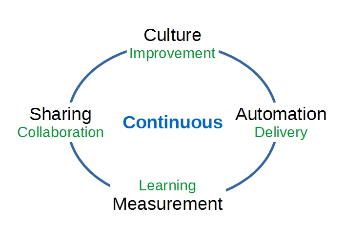

Books for the Well-Grounded Software Professional
Michael Gfeller
Computas AS
www.mgfeller.net
Context
- DevOpsCon 2015 München
- DevOps State of the Union. John Willis (Docker Inc.)
- CAMS: Culture, Automation, Measurement, Sharing
Cybernetic Feedback Loop
- Analogy to manufacturing
- Lean production
- Constraints handling
- Technical debt
- Entire systems view
- The Three Ways
The Three Ways
- First way: left-to-right, production
- Second way: right-to-left, feedback
- Third way
- culture
- fostering continuous experimentation and taking risks
- repetition and practice is the prerequisite to mastery
Kanban
- Visualize work
- Organize work
- Complete work
- Transparent work progress
- Establish value stream
- Limit work-in-progress (WIP)
- Pull-based system
- Throughput instead of capacity
Work-in-progress - Zeigarnik Effect
The adult's brain has a 90% chance of being preoccupied with unfinished business.

Personal work is messy.
Kanban in 4 Steps
- Establish value stream
- Populate backlog
- Limit work-in-progress
- Pull work
Two takeaways
Work unseen is work uncontrolled.
We can't (and shouldn't!) do more work than we can handle.
Therefore:
- Visualize work
- Limit work-in-progress
Kata
"Kendo Kata are fixed patterns that teach kendoka (kendo practitioners) the basic elements of swordsmanship. There are two roles, uchidachi (打太刀), the teacher, and shidachi (仕太刀), the student." (Wikipedia)
2 Katas
- Improvement Kata
- Coaching Kata
Improvement Kata
- Target
Coaching Kata
"It's always the system's fault, never a person 's. No blaming culture."
Continuous ...
- Integration
- Delivery
- Deployment
Design and architecture need to support CD.